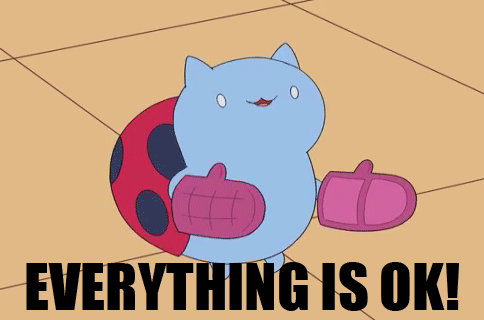

I work at Bocoup
I work at bocoup, with some awesome peeps! And we all make pull requests everyday.
I work on jQuery
I've contributed to a lot of jQuery teams. The Core Team, UI Team, Infrastructure Team, and the Foundation Board to name a few. If you've used .animate(), or looked at a jQuery website, you've used my work. That work was all done using Pull Requests.
Distributed
Everyone has their own local copy!
I just want to review a few things about git.
Speed!
→ speedy because it's local for most operations, no need to check with the server to do most operations
Non-Linear Workflow
(google image search "git workflow")
→ non-linear... branching and mergeing are super fast, A core assumption in Git is that a change will be merged more often than it is written
Pull Requests
PR's start as branches
Start Clean!
git checkout master
git pull origin master
git checkout -b my-feature
Get in the habbit of always branching from a "fresh pull" of master
JIRA Integration
Usually we will be creating our branches directly in JIRA or BitBucket instead of the command line. In this case we will want to `git fetch` and `git checkout branchname`
Follow the tutorial!
https://confluence.atlassian.com/display/
Rather than read this entire document to you, I'm just going to cover the highlights.
Pull requests let you push your commits, review, comment on diffs, and eventually merge
a change into `master`. This workflow has a lot of benifits, but mostly, release stability and confidence is going to increase as many eyes will see each change before it is made.
PR's are discussions
When creating your PR, remember, it's a discussion. Write about what you did, why you did it, and why you think it needs to be merged!
Every change MUST enter a repository as a Pull Request.
Code Reviews
Both general and line comments.
"Magic links" from commentsJIRA-issue#, #PR, sha
Expect a back and forth
So now that we have a PR, lets talk about reviews. Bitbuckets interface allows us to comment on a PR, comment on a line of code in the diff of a PR, link up to other issues and CC other users and teams really easily. Expect a bit of back and forth, make a few revisions, push fixes.
Comments welcome!
"Can you explain why we need this?"
"Would it be better to...."
"I think you need a comment here, it took me a few minutes to figure out"
"I tried this code locally, but the tests failed"
Sometimes what we really need is a fresh pair of eyes to tell us something is greek instead of java. Just be friendly and try your best to be helpful to everyone involved.

Once everyone signs off on it, the maintainers of a project will come through and merge your changes in.
Maintainers will merge
Pull direct from pull requests
https://gist.github.com/gnarf/5406589
git spr 4 - creates local branch pr/4 from the origin remote and checks it outgit pr-clean - removes all pr/* branches from your local repo
You'll be able to checkout their branches directly, but sometimes it's easier as a maintainer to organize your branches based on pull request number. I've written some git aliases that can help
Squashed...
As a maintainer, when you merge with the `--squash` option, it will allow you to create a new commit. Just remember to set the author on the new commit or it will go down in history and blame as your fault.
Conflicts? Rebase?
The Maintainers might ask the Contributor to do this themselves if the conflict is too confusing.
Notes on squash/rebase
Sometimes the conflict is too hard to merge by the maintainers. At this point we want to ask the original developer to "rebase" their pull request against the latest "master". This process is pretty intense, and is one of the most powerful and scary git commands. I've linked here to some extra notes.
Questions?
I use git every day - A.M.A.
Twitter: @gnarf - anytime!